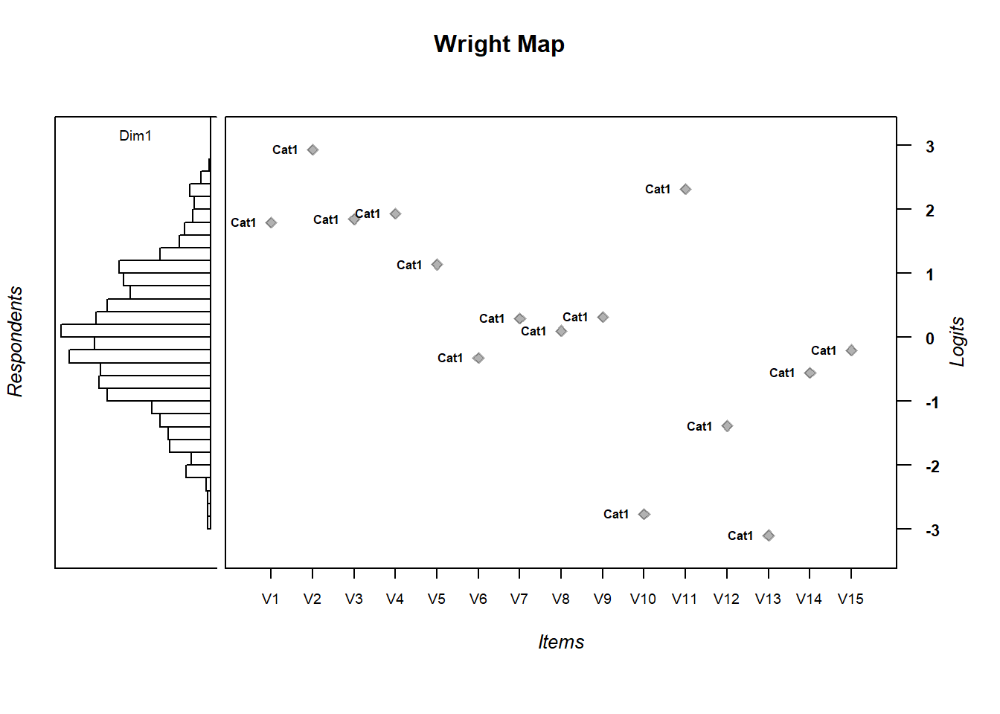
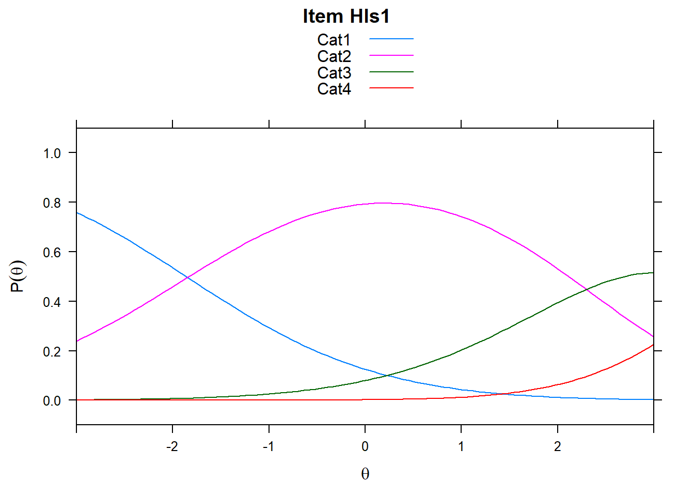

Chapter 7 Person Abilities
Person abilities are also of interest. We can look at the person side of the model by computing person abilities.
Compute person abilities using the
tam.wlefunction and assign to an object calledabil.Extract person abilities (\(\theta_p\)) from
abilto create an object in theenvironmentcalledPersonAbilitywhich will essentially be a column vector.
Note: You may want more information than this at times (such as standard errors) so you may not always want to subset this way.
#generates a data frame - output related to estimation
abil <- tam.wle(mod1)## Iteration in WLE/MLE estimation 1 | Maximal change 1.2824
## Iteration in WLE/MLE estimation 2 | Maximal change 0.2808
## Iteration in WLE/MLE estimation 3 | Maximal change 0.01
## Iteration in WLE/MLE estimation 4 | Maximal change 0.0012
## Iteration in WLE/MLE estimation 5 | Maximal change 1e-04
## Iteration in WLE/MLE estimation 6 | Maximal change 0
## ----
## WLE Reliability= 0.666See the first few rows of Abil. Notice you get:
pid: person id assigned by TAM.N.items: Number of items the person was given (this becomes interesting when you have linked test forms where students may not all see the same number of items)PersonScores: Number of items the student got right or endorsed (in the survey case).PersonMax: Max total that person could have gotten right/selected an option fortheta: estimated person abilityerror: estimated measurement errorWLE.rel: estimated person seperation reliability.
head(Abil)
# or
View(Abil)| pid | N.items | PersonScores | PersonMax | theta | error | WLE.rel |
|---|---|---|---|---|---|---|
| 1 | 15 | 9 | 15 | 0.9846072 | 0.6445392 | 0.666301 |
| 2 | 15 | 8 | 15 | 0.5861029 | 0.6396378 | 0.666301 |
| 3 | 15 | 10 | 15 | 1.3941069 | 0.6580203 | 0.666301 |
| 4 | 15 | 5 | 15 | -0.6435504 | 0.6827321 | 0.666301 |
| 5 | 15 | 12 | 15 | 2.2922517 | 0.7261986 | 0.666301 |
| 6 | 15 | 6 | 15 | -0.2146746 | 0.6565507 | 0.666301 |
The column in the abil data.frame corresponding to person estimates is the theta column. Pull out the ability estimates, theta, column if you would like, though, this creates a list. This makes it a little easier for a few basic tasks below.
PersonAbility <- abil$theta# Only the first 6 rows, shown
head(PersonAbility)## [1] 0.9846072 0.5861029 1.3941069 -0.6435504 2.2922517
## [6] -0.2146746You can export those estimated abilites to a .csv to save (you can also save directly in R, if you need to). This writes abil as a csv file to your output directory that we created earlier using the here package.
write.csv(abil, here("output", "HLSmod1_thetas.csv")7.1 Quick descriptives for person ability - we’ll use WrightMap to bring this all together
hist(PersonAbility)
mean(PersonAbility)## [1] 0.001822466sd(PersonAbility)## [1] 1.2051167.2 Wright Map
To visualize the relationship between item difficulty and person ability distributions, call the WrightMap package installed previously. We’ll generate a simple WrightMap. We’ll clean it up a little bit by removing some elements
library(WrightMap)
IRT.WrightMap(mod1)
IRT.WrightMap(mod1, show.thr.lab=FALSE)
7.2.1 Exercise:
- Are the items appropriately targeted to the ability level of the population?
- Why do you think?